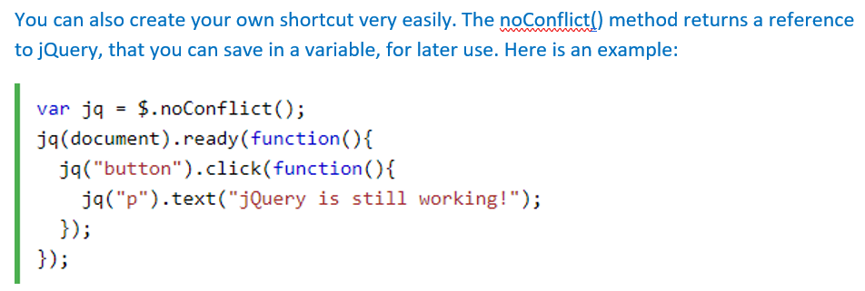

Jquery Provides the noConflict() method to avoiding the issue of Jquery Confliction with other library. As you already know; jQuery uses the $ sign as a shortcut for jQuery. There are many other popular JavaScript frameworks like: Vue Js, Backbone Js, Ember Js, Knockout Js, and many more.
If we are using two different frameworks at the same shortcut, It is possible to stop working one of them. The jQuery team have already thought about this, and implemented the noConflict() method.
The noConflict() method releases the hold on the $ shortcut identifier, so that other scripts can use it.
